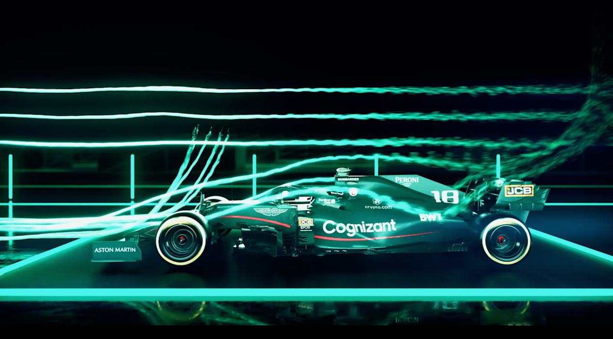

Formula 1, otomobil sporlarının mutlak zirvesi olarak kabul edilen ve Uluslararası Otomobil Federasyonu (FIA) tarafından yönetilen dünyanın en prestijli motor sporu organizasyonudur. Her yıl düzenlenen dünya şampiyonasında, motor sporları dünyasının devleri olan 10 elit takım ve griddeki en yetenekli 20 pilot, beş kıtaya yayılmış ikonik pistlerde şampiyonluk için kıyasıya bir mücadele verir. Bu organizasyon, sadece bir yarış serisi değil; hızın, tutkunun ve milyar dolarlık yatırımların birleştiği devasa bir endüstridir.
Modern bir Formula 1 aracı, havacılık teknolojisinden ilham alan aerodinamik yapısı ve hibrit motor üniteleriyle tam bir mühendislik harikasıdır. Karbon fiber şasileri sayesinde son derece hafif olan bu araçlar, 0'dan 100 kilometre hıza sadece 2.4 saniyede ulaşırken, yüksek yere basma kuvvetleri sayesinde virajları inanılmaz hızlarda dönebilirler. Yarış boyunca pilotlar, yaklaşık 305 kilometrelik mesafe boyunca kalp atış hızlarının 170'in üzerine çıktığı ve vücutlarının 5G'ye varan kuvvete maruz kaldığı fiziksel bir sınavdan geçerler.
Yarışın kaderi ise sadece pistteki hızla değil, pit duvarında alınan milisaniyelik kararlarla belirlenir. Takımların anlık veri analitiği, lastik aşınma hesaplamaları ve mekanikerlerin 2 saniyenin altındaki kusursuz pit stop operasyonları, zafer ile mağlubiyet arasındaki çizgiyi çizer. Formula 1, insan becerisinin en ileri teknolojiyle buluştuğu, her yarış hafta sonunda dünya genelinde milyonlarca tutkulu taraftarı ekran başına kilitleyen eşsiz bir teknoloji ve strateji şölenidir.

Formula 1’in kökleri, 20. yüzyılın başlarında Avrupa’nın tozlu yollarında gerçekleştirilen efsanevi Grand Prix yarışlarına dayanmaktadır. Ancak modern anlamda ilk resmi Formula 1 Dünya Şampiyonası yarışı, 13 Mayıs 1950 tarihinde İngiltere’nin Silverstone pistinde start almıştır. Bu tarihi başlangıç, motor sporlarında yeni bir çağın kapılarını aralamış; Alfa Romeo, Maserati ve Ferrari gibi markaların saf hız tutkusuyla şekillenen bir rekabetin temellerini atmıştır.
1970'li ve 80'li yıllar, sporun sadece hızla değil, teknolojik inovasyonlarla da tanıştığı bir dönem olmuştur. Colin Chapman’ın aerodinamik devrimleri, turbo motorların gelişi ve güvenlik standartlarının artmasıyla F1, küresel bir fenomene dönüşmüştür. Bu "altın çağ", Niki Lauda ve Alain Prost gibi strateji dehalarının yanı sıra, hırsı ve yeteneğiyle sporu bambaşka bir boyuta taşıyan efsanevi Ayrton Senna’nın unutulmaz düellolarına tanıklık etmiştir.
2000’li yıllar ise Michael Schumacher ve Ferrari’nin rekorları altüst eden kusursuz dominasyonuyla başlamış, ardından Sebastian Vettel ve Red Bull Racing’in gençlik enerjisiyle devam etmiştir. Günümüzde ise hibrit motor çağının en büyük temsilcisi olan Lewis Hamilton’ın rekorları ve Max Verstappen gibi yeni nesil yıldızların yükselişiyle spor, dijitalleşen dünyanın zirvesinde yer almaya devam etmektedir. 70 yılı aşkın bu tarih, her virajda yeni bir kahraman ve her sezonda yeni bir teknolojik devrim yazmaya devam ediyor.

Bir Formula 1 aracı, yeryüzündeki en sofistike veri merkezlerinden biri olarak kabul edilir. Aracın her noktasına yerleştirilen 300'den fazla sensör, yarış boyunca saniyede binlerce veri paketini pit duvarına iletir. Takım mühendisleri; lastiklerin iç sıcaklığından fren disklerinin aşınma payına, motorun termal verimliliğinden aerodinamik sürüklenmeye kadar her parametreyi anlık olarak telemetri sistemleri üzerinden takip eder. Bu devasa veri akışı, yarış stratejisinin saniyeler içinde güncellenmesini sağlayarak zaferin dijital altyapısını oluşturur.
Aerodinamik tasarım, bu araçların sadece hızlı gitmesini değil, adeta zemine "mıknatıs gibi" yapışmasını sağlar. Ön ve arka kanatların yarattığı hava akımı yönetimi, araç yüksek hızlara ulaştığında kendi ağırlığının birkaç katı kadar yere basma kuvveti (downforce) üretir. Bu teknoloji sayesinde pilotlar, fizik kurallarını zorlayan hızlarla viraj alabilirler. Ayrıca, DRS (Hareketli Arka Kanat) gibi sistemler, düzlüklerde hava direncini azaltarak geçiş hamlelerini mümkün kılan mekanik bir deha örneği sunar.
Pilotun en büyük yardımcısı olan direksiyon ise sıradan bir yönlendirme aracından çok, bir süper bilgisayar arayüzüdür. Üzerindeki onlarca buton ve döner anahtar sayesinde pilot; yakıt haritasını değiştirebilir, diferansiyel ayarlarını viraj bazlı güncelleyebilir ve ERS (Enerji Geri Dönüşüm Sistemi) üzerinden bataryadaki elektrik gücünü ne zaman kullanacağına karar verebilir. Her yarış, sadece fiziksel bir sürüş performansı değil; aynı zamanda bu karmaşık mühendislik sistemlerini en verimli şekilde yönetme sanatıdır.
